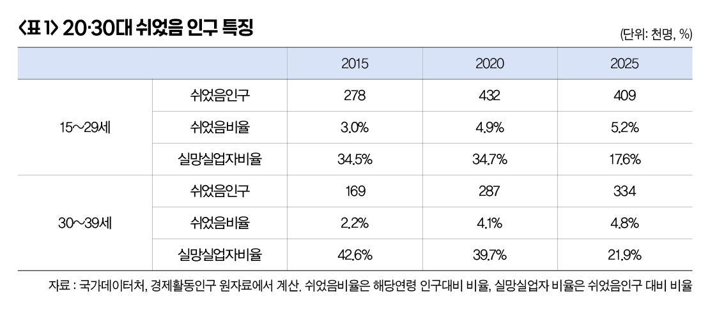
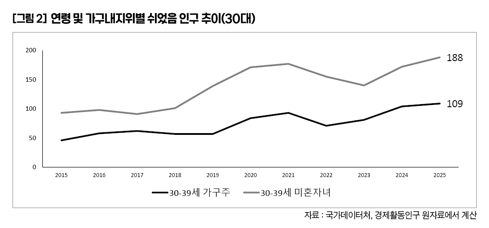

박영삼의 통계로 보는 노동
비경제활동인구 20대 자녀 줄고 30대 가구주 10만명 넘어 … 일시적 실망실업자 감소세

지난주 발표된 10월 고용지표에 대해 언론은 청년 고용률 하락과 쉬었음 인구 증가에 초점을 맞췄다. 15세 이상 전체 인구와 생산가능인구(15~64세)의 고용률(63.4%, 70.1%)과 경제활동참가율(64.8%, 71.8%)은 역대 최고 수준이고, 공식실업률(2.2%, 2.4%)도 2023년에 이어 두 번째로 낮았다. 그럼에도 체감 고용상황이 개선된 것으로 느껴지지 않는 탓이다.
공식실업률만으로는 고용 현실을 온전히 보여주기 어렵다고 해서 작성하는 고용보조지표도 대체로 양호하다. 10월 공식실업률은 2.2%로 지난해보다 0.1%포인트 떨어졌고, 고용보조지표1·2·3 역시 각각 4.6%, 5.5%, 7.8%로 역대 최저다. 고용보조지표1은 더 일하고 싶지만 파트타임에 머무는 사람을 포함하고, 고용보조지표2는 구직 포기 실망실업자와 개인적·가족 사정으로 일자리를 얻지 못한 잠재경제활동인구를 더한다. 고용보조지표3은 이들을 모두 합한 지표다.
반면 청년(15~29세) 고용률과 청년·30대 쉬었음 인구 비율은 꾸준히 악화되고 있다. 청년 고용률은 44.6%로 전년보다 1.0%포인트 낮아졌고, 2023년 5월부터 이어진 전년 대비 하락 흐름이 계속되고 있다. 경제협력개발기구(OECD) 평균 청년고용률은 55% 수준으로 한국은 스페인(43%)보다는 높지만 프랑스(49%)보다는 낮다. 다만 과거와 비교하면 개선된 수치이기도 하다. 2015년 10월 청년고용률은 41.3%였다가 2019년 44.3%까지 올랐고, 2020년 코로나19로 42.3%로 떨어졌다. 이후 2021년 45.1%, 2022년 46.4%로 상승세를 회복했지만, 2024년 0.8%포인트, 올해 10월 다시 1%포인트 하락했다.
실망실업은 줄고 NEET는 늘었다
30대 고용률은 상승세지만 쉬었음 인구는 빠르게 늘고 있다. 2015년 10월 74.5%였던 30대 고용률은 2023년 80.0%, 올해 80.8%를 기록했지만 쉬었음 인구는 코로나19 이후 증가세가 뚜렷하다. 2022년 25만2천명에서 2023년 26만3천명, 2024년 31만명, 2025년 33만4천명으로 뛰었다.
쉬었음 인구는 비경제활동인구 중 학업·군입대 대기·육아·가사 등 어디에도 속하지 않으면서 적극적인 구직활동도 하지 않는 사람들을 말한다. 20대 쉬었음 인구 비율은 5.2%, 30대는 4.8% 수준이다.
이 가운데는 임금이나 근로조건이 기대에 맞지 않아 구직을 포기한 실망실업자가 20%가량 포함돼 있다. 과거 30~40%였던 비율이 크게 낮아지면서 순수 비경제활동인구, 즉 청년 니트(NEET:교육·고용·직업훈련 중 어느 것에도 속하지 않는 사람) 비중이 높아진 점이 특징이다.

30대 가구주까지 번지는 쉬었음 증가, 위험 신호
일시적으로 구직을 단념한 실망실업자는 적절한 일자리가 생기면 취업으로 돌아올 여지가 있지만, 순수 비경제활동인구가 늘어나는 흐름은 우려할 만하다. 한 번 비경제활동 상태가 굳어지면 다시 노동시장으로 복귀하기 어려울 수 있기 때문이다.
연령과 가구내 지위를 함께 보면 30대 가구주의 쉬었음 증가가 특히 두드러진다. 쉬었음 인구 가운데 절대다수는 여전히 20대 이하 미혼자녀가 차지하지만, 30대 미혼자녀와 30대 가구주에서도 증가세가 확인된다. 2015년 10만명 미만이던 30대 가구주는 2025년 18만8천명으로 크게 늘었고, 5만명 미만이던 30대 미혼자녀는 2024년 10만명을 넘어 올해 10만9천명에 이르렀다. 반면 20대 이하 자녀의 쉬었음 인구는 33만4천명에서 32만명으로 오히려 줄었다.
쉬었음 인구의 중심이 20대 미혼자녀에서 30대 미혼자녀로 이동하고, 나아가 30대 가구주까지 확산되는 현상은 정부의 대응이 더 이상 늦어져서는 위험하다는 신호다.

고려대 노동문제연구소 노동데이터센터장 (youngsampk@gmail.com)